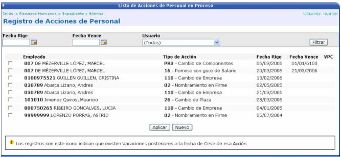
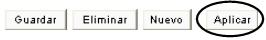

Las Acciones de Personal son importantes debido a que en ellas se registran los movimientos que el empleado a tenido en la empresa, brindándole así al usuario del sistema, una buena administración de la información, para tener un perfil del empleado y le ayude en la toma de decisiones en caso que sea necesario.
Los movimientos pueden ser desde cambios en la situación laboral del empleado (puesto, plaza, oficina, despidos, renuncias) hasta cambios en el salario.
Las acciones de personal se pueden clasificar en cinco grupos, los cuales se detallan a continuación:
a. Nombramientos.
Son acciones que incorporan un nuevo personal a la empresa ocupando una de las plazas disponibles. Esta afectación modifica automáticamente la situación del empleado, incluyéndolo dentro del expediente y habilitándolo para recibir cualquiera de las acciones de los otros tipos.
b. Cambios Salariales.
Son acciones que se caracterizan por el cambio que sufre el salario que se le paga periódicamente a un empleado. Se pueden aplicar para la nómina actual como para nóminas de periodos anteriores y posteriores.
c. Cambios de Situación Laboral.
Son acciones que registran los cambios que ha tenido el trabajador en la empresa, como cambio de puesto, de sucursal, de jornada laboral, etc.
d. Incapacidades.
Las políticas que rigen las incapacidades varían de una empresa a otra, sin embargo este tipo de acciones realiza los ajustes necesarios en el salario del empleado durante el tiempo que este se encuentre incapacitado. Las incapacidades pueden ser por enfermedad, accidentes o embarazo entre otras
e. Liquidaciones y Finiquito de Contratos.
Son acciones que dan por terminada la relación laboral entre el empleado y la empresa, inhabilitando al empleado del sistema y una vez que se aplique la nómina de liquidación, el funcionario no es más empleado de la empresa.

Para registrar una nueva acción se debe de ingresar cierta información que a continuación se detalla:
Empleado: Se debe de seleccionar el empleado al que se le va a aplicar la acción.
Tipo de Acción: Seleccionar de una lista de valores, el tipo de acción
Fecha Rige: Fecha en la que va a regir la nueva acción
Observaciones: En este campo se digitan las consideraciones necesarias a tomar en cuenta.
En el caso de acciones de permisos, incapacidades entre otros se mostrará un campo “Fecha Vence” para definir cuando se vence la acción.
Dependiendo del tipo de acción seleccionado, se desplegará una pantalla con donde el usuario podrá modificar ciertas situaciones o ciertos componentes, dependiendo esto de la parametrización del sistema y tipo de acción seleccionada.
Es necesario recordar que una vez que se termine de definir la situación propuesta se deben de guardar los cambios.

Cuando se guarda la acción, aparece el botón de “Aplicar” donde el usuario aplica la acción y la misma se ejecutará cuando se realice el cálculo de la nomina correspondiente, según el rango de fecha.

Es importante mencionar que dependiendo de si el tipo de acción de personal seleccionada posee o no un trámite asociado, se aplicará en firme la acción o se incluirá dentro de la cadena de autorizaciones definida para el tipo de acción de personal.